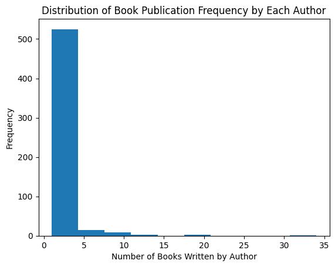
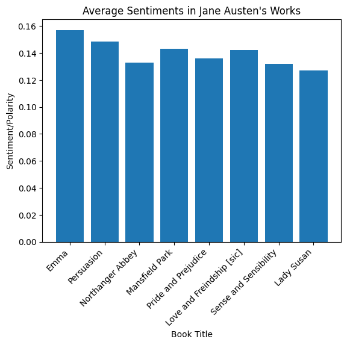
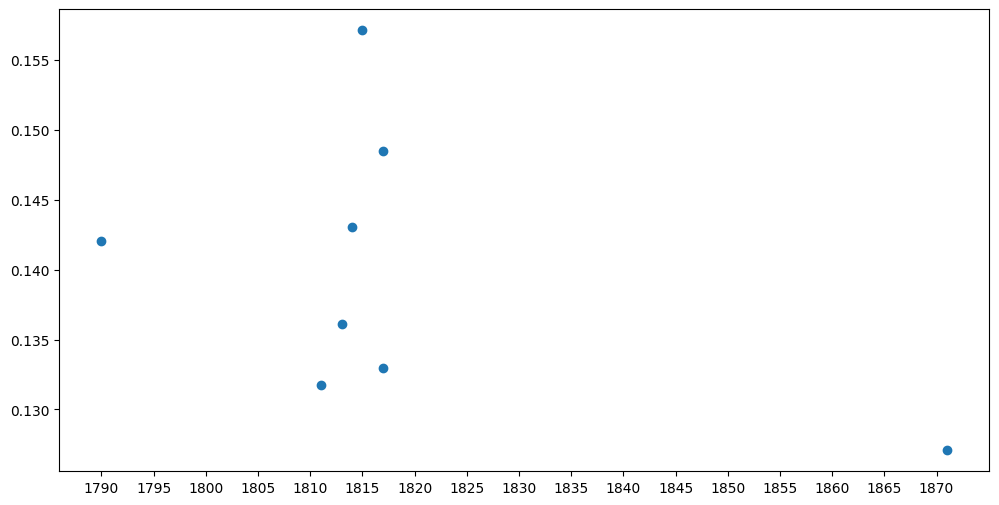
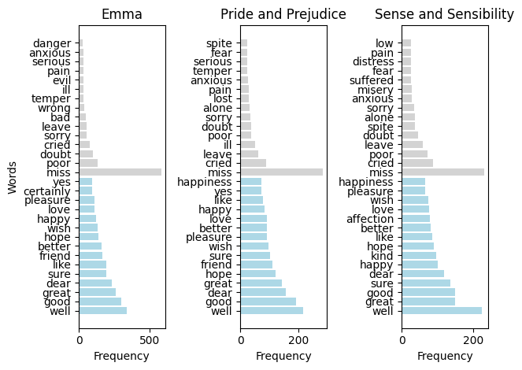
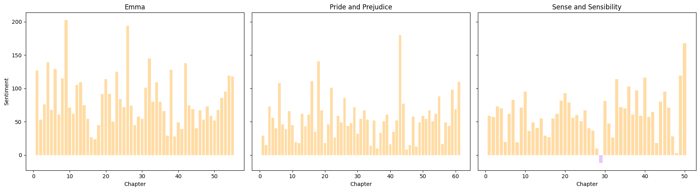
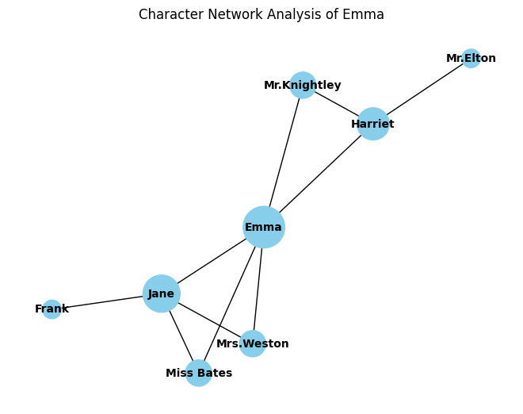
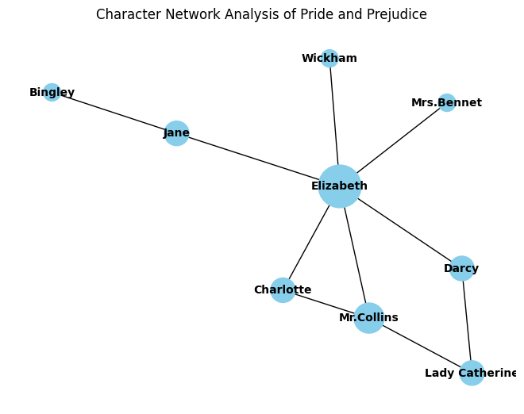
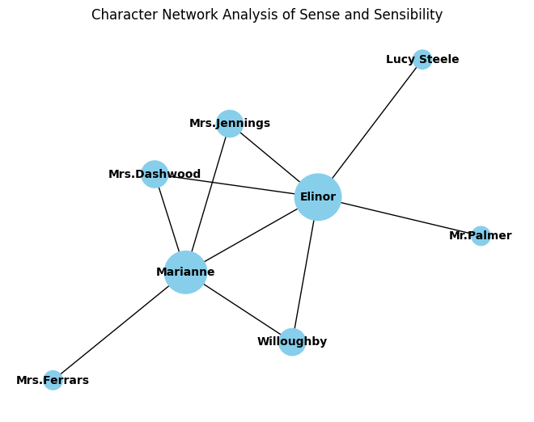

This is a project analyzing the complete works of Jane Austen. I used the “classics” dataset from corgis, and various books written by Jane Austen from Project Gutenberg. As a fan of classic literature, I am motivated to conduct analysis about Jane Austen because she was one of the greatest female novelists in the 18th century. Her works always express a well-articulated crique and reflection about romance, marriage, wealth, and society, which led me to ask the question: what is the unique writing style or characteristic of Jane Austen? To answer this question, I will be using data from the following sources: https://corgis-edu.github.io/corgis/csv/classics/ https://www.gutenberg.org/ebooks/31100
Methods
The classics dataset includes data about 1006 books from the work of 555 authors. For each book, the dataset provides general information such as publication year and classification, also word analysis information such as number of sentences or reading difficulty level scores.
Potential areas of concern in the data are overlapping information and missing/misleading publication years. The book ‘Pride and Prejudice,’ for example, has two versions, with one being an updated version and the other being an older version. Publication year may also be misleading as the year may reflect a more recent, edited publication of the book rather than the original publication year. I will the cleaning the data to resolve these concerns.
# importing the dataimport pandas as pddataset ="classics.csv"classic_data = pd.read_csv('classics.csv')classic_data.head()
bibliography.congress classifications
bibliography.languages
bibliography.subjects
bibliography.title
bibliography.type
metadata.downloads
metadata.id
metadata.rank
metadata.url
bibliography.author.birth
...
metrics.sentiments.polarity
metrics.sentiments.subjectivity
metrics.statistics.average letter per word
metrics.statistics.average sentence length
metrics.statistics.average sentence per word
metrics.statistics.characters
metrics.statistics.polysyllables
metrics.statistics.sentences
metrics.statistics.syllables
metrics.statistics.words
0
PR
en
Sisters -- Fiction,Courtship -- Fiction,Social...
Pride and Prejudice
Text
36576
1342
1
https://www.gutenberg.org/ebooks/1342
1775
...
0.136713
0.522239
4.83
18
0.05
586794
4603
6511
170648.1
121533
1
PS
en
Mentally ill women -- Fiction,Feminist fiction...
The Yellow Wallpaper
Text
26363
1952
2
https://www.gutenberg.org/ebooks/1952
1860
...
0.054174
0.534787
4.41
15
0.06
26769
102
385
7686.9
6067
2
PZ,PR
en
Fantasy
Alice's Adventures in Wonderland
Text
18882
11
3
https://www.gutenberg.org/ebooks/11
1832
...
0.041079
0.497276
4.65
17
0.06
122719
339
1501
33810.3
26389
3
PR
en
Monsters -- Fiction;Frankenstein's monster (Fi...
Frankenstein; Or, The Modern Prometheus
Text
17128
84
4
https://www.gutenberg.org/ebooks/84
1797
...
0.100902
0.539516
4.77
23
0.04
357604
2604
3239
106802.1
74959
4
PT
en
Psychological fiction,Metamorphosis -- Fiction
Metamorphosis
Text
15683
5200
5
https://www.gutenberg.org/ebooks/5200
1883
...
0.041997
0.479019
4.56
27
0.04
100372
397
800
28752.3
22022
5 rows × 38 columns
To clean the data, I use the Pandas python library to remove duplicate rows with same boook title, then keeping the updated version of the book. Since my research question is about the works of Jane Austen, I will be filtering out the data to include only Jane Austen’s books and create a separate new dataframe.
# subset data with only Jane Austen's workjane_data = new_classic[new_classic['bibliography.author.name'] =="Austen, Jane"]jane_data
bibliography.congress classifications
bibliography.languages
bibliography.subjects
bibliography.title
bibliography.type
metadata.downloads
metadata.id
metadata.rank
metadata.url
bibliography.author.birth
...
metrics.sentiments.polarity
metrics.sentiments.subjectivity
metrics.statistics.average letter per word
metrics.statistics.average sentence length
metrics.statistics.average sentence per word
metrics.statistics.characters
metrics.statistics.polysyllables
metrics.statistics.sentences
metrics.statistics.syllables
metrics.statistics.words
22
PR
en
Fathers and daughters -- Fiction,Humorous stor...
Emma
Text
8513
158
23
https://www.gutenberg.org/ebooks/158
1775
...
0.157109
0.542307
4.80
16
0.06
755056
4851
9348
216434.7
157439
88
PR
en
Ship captains -- Fiction,First loves -- Fictio...
Persuasion
Text
3079
105
89
https://www.gutenberg.org/ebooks/105
1775
...
0.148467
0.522353
4.76
23
0.04
396720
2450
3535
114975.0
83284
100
PR
en
Gentry -- England -- Fiction,Horror tales -- A...
Northanger Abbey
Text
2871
121
101
https://www.gutenberg.org/ebooks/121
1775
...
0.132992
0.532460
4.81
21
0.05
370744
2548
3651
108090.0
77140
114
PR
en
Country homes -- Fiction,Adoptees -- Fiction,C...
Mansfield Park
Text
2537
141
115
https://www.gutenberg.org/ebooks/141
1775
...
0.143009
0.526260
4.72
21
0.05
752380
4733
7336
217970.1
159540
394
PR
en
Sisters -- Fiction,Courtship -- Fiction,Social...
Pride and Prejudice
Text
912
42671
395
https://www.gutenberg.org/ebooks/42671
1775
...
0.136093
0.522054
4.84
18
0.05
590445
4548
6563
171244.8
121919
590
PR
en
Epistolary fiction,Essays,England -- Social li...
Love and Freindship [sic]
Text
654
1212
591
https://www.gutenberg.org/ebooks/1212
1775
...
0.142070
0.547007
4.75
26
0.04
157906
1091
1263
47058.3
33252
602
PR
en
Gentry -- England -- Fiction,Sisters -- Fictio...
Sense and Sensibility
Text
645
21839
603
https://www.gutenberg.org/ebooks/21839
1775
...
0.131733
0.532080
4.85
21
0.05
591337
4047
5566
171572.4
121839
630
PR
en
Widows -- Fiction,England -- Fiction,Mate sele...
Lady Susan
Text
621
946
631
https://www.gutenberg.org/ebooks/946
1775
...
0.127080
0.553882
4.72
23
0.04
108750
899
993
32407.2
23047
784
PR
en
England -- Social life and customs -- Fiction;...
The Complete Project Gutenberg Works of Jane A...
Text
514
31100
785
https://www.gutenberg.org/ebooks/31100
1775
...
0.142298
0.531765
4.79
20
0.05
3720159
25224
38194
1079247.6
777121
9 rows × 38 columns
Next, I will be moving on to exploratory data analysis. My process is to create visualizations using both the classics data and jane_austen data to discover the relative status of Jane’s work in comparison to other classic literature authors. Then I will create visualizations using only the jane_austen data to obtain some basic statistics that show comparision within her complete set of writings.
After exploratory data analysis, I will move on to creating data visualizations that directly answer my research question. I plan to conduct three types of data visualizations: overall sentiment, sentiment development, and network analysis. Upon completing visualizations, I will research secondary sources about Jane Austen’s lifestory and scholarly interpretations of her work, then incorporate my findings into the discussion section.
This bar plot shows that Jane Austen’s work has an average flesch reading score of about 70, which is a fairly easy reading level (7th grade material according to official flesch reading ease website) in comparison to other authors in the same time period. An easy to read level may suggest that Jane intends for her writing to be popularly circulated, so she writes in an easier, less difficult language to attract a public audience.
Below is my second data exploration graph:

This histogram show the number of books written per author. The most frequent number of books written per lifetime of a classic literature author is between 0 to 5. Jane Austen had 8 publications, which is substantially more compared to other classics authors. What are potential contributing factors for this? Her career as a novelist, talent, family background, time period could all be contriubting factors. These external factors would contribute to the writing style that Jane Austen would adopt, as frequent publications meant the author enjoys public-facing or needs income.
Below is my third data exploration graph:

This bar plot shows that the average sentiment/polarity score of Jane Austen’s works range from 0.12 to 0.16. This is an overall positive score, which means that Jane Austen generally adopt a positive tone in her writings. It is not surprising to discover this, becaus the book titles are already showing abundance positivity using words like “love”, “sense”, etc. This finding would be further explored in the next section through the analysis of sentiment development in each book.
Below is my fourth data exploration graph:

This scatterplot shows the sentiment score of Austen’s works ordered by publication year (since the original data had misleading publication years, I created a new list of first publication years based on my research from the Internet). We can see a sentiment score increase as Jane publishes more books, but then the sentiment score decreases in her most recent work. We can also see that there is a gap in the graph, for which Jane’s peak years were 1810s to 1820s, then she did not publish anything until 50 years later in the 1870s. Jane’s personal lifetime could have contributed to her fluctuating choice of words in her works, which will be further explore in the analysis section.
For my analysis, I plan to webscrape the Project Gutenberg’s complete collection of works by Jane Austen. I would use the requests package to retrieve each books’ text file from the website, then split each text into string according to chapters. The end result would be 8 strings with eacch string item being one chapter of that particular book.
# Create a function to webscrape text files from Project Gutenbergdef scrape_txt(target_url): response = requests.get(target_url) parse = BeautifulSoup(response.content, 'html.parser') download_link =Nonefor link in parse.find_all('a'):if'Plain Text UTF-8'in link.get_text(): download_link = link['href']breakif download_link: txt_url =f"https://www.gutenberg.org/{download_link}" response = requests.get(txt_url) txt_content = response.textreturn txt_contentelse:returnNone
# Create a string of all Jane Austen's work, each item is one bookjane_austen = []for url in jane_data['metadata.url']: content = scrape_txt(url)if content isnotNone: jane_austen.append(content)book_title = jane_data['bibliography.title']jane_austen_work =dict(zip(book_title, jane_austen))jane_austen_work =dict(list(jane_austen_work.items())[:8])
# splitting each book into chapters, all accessible in the dictionary "chapters"chapters = {}titles = {'Emma': 'EMMA','Persuasion': 'PERSUASION','Northanger Abbey': 'NORTHANGER ABBEY','Mansfield Park': 'MANSFIELD PARK','Pride and Prejudice': 'PRIDE AND PREJUDICE','Love and Freindship [sic]': 'LOVE AND FREINDSHIP [SIC]','Sense and Sensibility': 'SENSE AND SENSIBILITY','Lady Susan': 'LADY SUSAN'}for work, content in jane_austen_work.items():if work =='Pride and Prejudice': start_tag ='***START OF THE PROJECT GUTENBERG EBOOK {}***'.format(titles[work]) end_tag ='***END OF THIS PROJECT GUTENBERG EBOOK {}***'.format(titles[work]) work_string = content.split(start_tag)[1] work_string = work_string.split(end_tag)[0] work_chapters = [i.lower() for i in work_string.split('CHAPTER')[1:]] elif work =='Love and Freindship [sic]': start_tag ='*** START OF THE PROJECT GUTENBERG EBOOK {} ***'.format(titles[work]) end_tag ='*** END OF THIS PROJECT GUTENBERG EBOOK {} ***'.format(titles[work]) work_string = content.split(start_tag)[1] work_string = work_string.split(end_tag)[0] work_chapters = [i.lower() for i in work_string.split('LETTER')[1:]]else: start_tag ='*** START OF THE PROJECT GUTENBERG EBOOK {} ***'.format(titles[work]) end_tag ='*** END OF THIS PROJECT GUTENBERG EBOOK {} ***'.format(titles[work]) work_string = content.split(start_tag)[1] work_string = work_string.split(end_tag)[0] work_chapters = [i.lower() for i in work_string.split('CHAPTER')[1:]]if work =='Emma': work_chapters = work_chapters[55:]elif work =='Persuasion': work_chapters = work_chapters[24:]elif work =='Northanger Abbey': work_chapters = work_chapters[31:]elif work =='Mansfield Park': work_chapters = work_chapters[48:]elif work =='Sense and Sensibility': work_chapters = work_chapters[50:]elif work =='Love and Freindship [sic]': work_chapters = work_chapters[34:] chapters[work] = work_chapters
At this point, I’ve created two important strings: jane_austen_work and chapters. The “jane_austen_work” is a dictionary, for which each tuple represent a key that is a book title and a value that is the content/text of the book. This makes the accessibility of txt files according to book title easy for later analysis. The “chapters” is also a dictionary, for which whenever I enter the key, or a book title, the content/value will be the corresponding txt split into book chapters. This helps me to conduct analysis per chapter and track development in each book.
Next part is my data visualizations and analysis. For simplicity and detailed analysis, I will be concentrating on three of the most popular works of Jane Austen, which is “Pride and Prejudice”, “Sense and Sensibility”, and “Emma”.
My first visualization is about overall sentiment in each book:
# Data visualization 1 --> Overall Sentiment# Compute the overall polarity score of positive and negative words in each book# Combine into one visualizationstop_words =set(stopwords.words('english'))analyzer = vader.SentimentIntensityAnalyzer()
Show the code
# For each book, I find the most frequent positive words and negative words, then put them separately into two lists# Emmaemma_string = jane_austen_work['Emma'].lower()emma_tokens = word_tokenize(emma_string)myStopWords =list(punctuation) + stopwords.words('english')newEmma_list = [s for s in emma_tokens if s.lower() notin myStopWords]pos_list1 = []neg_list1 = []for word in newEmma_list: score = analyzer.polarity_scores(word) compound_score = score['compound']if compound_score >0: pos_list1.append(word)elif compound_score <0: neg_list1.append(word)else:passcom_pos1 = nltk.FreqDist(pos_list1).most_common(15)com_neg1 = nltk.FreqDist(neg_list1).most_common(15)pos_words1, pos_frequencies1 =zip(*com_pos1)neg_words1, neg_frequencies1 =zip(*com_neg1)# Pride and Prejudicepj_string = jane_austen_work['Pride and Prejudice'].lower()pj_tokens = word_tokenize(pj_string)newPj_list = [s for s in pj_tokens if s.lower() notin myStopWords]pos_list2 = []neg_list2 = []for word in newPj_list: score = analyzer.polarity_scores(word) compound_score = score['compound']if compound_score >0: pos_list2.append(word)elif compound_score <0: neg_list2.append(word)else:passcom_pos2 = nltk.FreqDist(pos_list2).most_common(15)com_neg2 = nltk.FreqDist(neg_list2).most_common(15)pos_words2, pos_frequencies2 =zip(*com_pos2)neg_words2, neg_frequencies2 =zip(*com_neg2)# Sense and Sensibilityss_string = jane_austen_work['Sense and Sensibility'].lower()ss_tokens = word_tokenize(ss_string)newSs_list = [s for s in ss_tokens if s.lower() notin myStopWords]pos_list3 = []neg_list3 = []for word in newSs_list: score = analyzer.polarity_scores(word) compound_score = score['compound']if compound_score >0: pos_list3.append(word)elif compound_score <0: neg_list3.append(word)else:passcom_pos3 = nltk.FreqDist(pos_list3).most_common(15)com_neg3 = nltk.FreqDist(neg_list3).most_common(15)pos_words3, pos_frequencies3 =zip(*com_pos3)neg_words3, neg_frequencies3 =zip(*com_neg3)
Show the code
# Creating a combined visualization using subplot# Emmapos_words1, pos_frequencies1 =zip(*com_pos1)neg_words1, neg_frequencies1 =zip(*com_neg1)plt.subplot(1, 3, 1)plt.barh(pos_words1, pos_frequencies1, color='lightblue', label='Positive Words')plt.barh(neg_words1, neg_frequencies1, color='lightgrey', label='Negative Words')plt.xlabel('Frequency')plt.ylabel('Words')plt.title('Emma')# Pride and Prejudicepos_words2, pos_frequencies2 =zip(*com_pos2)neg_words2, neg_frequencies2 =zip(*com_neg2)plt.subplot(1, 3, 2)plt.barh(pos_words2, pos_frequencies2, color='lightblue', label='Positive Words')plt.barh(neg_words2, neg_frequencies2, color='lightgrey', label='Negative Words')plt.xlabel('Frequency')plt.title('Pride and Prejudice')# Sense and Sensibilitypos_words3, pos_frequencies3 =zip(*com_pos3)neg_words3, neg_frequencies3 =zip(*com_neg3)plt.subplot(1, 3, 3)plt.barh(pos_words3, pos_frequencies3, color='lightblue', label='Positive Words')plt.barh(neg_words3, neg_frequencies3, color='lightgrey', label='Negative Words')plt.xlabel('Frequency')plt.title('Sense and Sensibility')plt.tight_layout()# Display the combined plotplt.show()

This visualization shows the frequency of negative and positive word occurences in each book. A pattern is obvious such that Jane Austen’s writings have a very positive choice of diction, since the frequency of positive words are much higher than the negative ones. This reflects that Jane’s writing style is always encouraging, upward-driven, and energetic. One misleading data, however, is visualized in the plot. The word “miss” have very high frequency as a negative word. However, based on my inspection on the original text file, the word is really a neutral word, such that it is not used to refer to something missing, but rather used for character referencing such as “Miss Bennet”. This data point can be misleading and shows certain flaws in NLP when determining the actual meaning of a word.
Next is my second data visualziation about sentiment development:
Show the code
# Data visualization 2 --> Sentiment Development# Create sentiment score for each chapter in each book, then combine into one visualization# Emmachapter_sentiment1 = []chapter_number1 = []for number, scene inenumerate(chapters['Emma'], 1): chapter_words = word_tokenize(scene) chapter_sentiment1_score =0for word in chapter_words: scores = analyzer.polarity_scores(word) compound_score = scores['compound']if compound_score >0: chapter_sentiment1_score +=1elif compound_score <0: chapter_sentiment1_score -=1 chapter_sentiment1.append(chapter_sentiment1_score) chapter_number1.append(number)# Pride and Prejudicechapter_sentiment2 = []chapter_number2 = []for number, scene inenumerate(chapters['Pride and Prejudice'], 1): chapter_words = word_tokenize(scene) chapter_sentiment2_score =0for word in chapter_words: scores = analyzer.polarity_scores(word) compound_score = scores['compound']if compound_score >0: chapter_sentiment2_score +=1elif compound_score <0: chapter_sentiment2_score -=1 chapter_sentiment2.append(chapter_sentiment2_score) chapter_number2.append(number)# Sense and Sensibilitychapter_sentiment3 = []chapter_number3 = []for number, scene inenumerate(chapters['Sense and Sensibility'], 1): chapter_words = word_tokenize(scene) chapter_sentiment3_score =0for word in chapter_words: scores = analyzer.polarity_scores(word) compound_score = scores['compound']if compound_score >0: chapter_sentiment3_score +=1elif compound_score <0: chapter_sentiment3_score -=1 chapter_sentiment3.append(chapter_sentiment3_score) chapter_number3.append(number)
Show the code
# Create subplots to combine visualizations of three booksfig, axes = plt.subplots(1, 3, figsize=(18, 5), sharey=True)colors1 = ['#E5C7FF'if score <0else'#FFDCA5'if score >0else'grey'for score in chapter_sentiment1]colors2 = ['#E5C7FF'if score <0else'#FFDCA5'if score >0else'grey'for score in chapter_sentiment2]colors3 = ['#E5C7FF'if score <0else'#FFDCA5'if score >0else'grey'for score in chapter_sentiment3]axes[0].bar(chapter_number1, chapter_sentiment1, color = colors1)axes[0].set_xlabel('Chapter')axes[0].set_ylabel('Sentiment')axes[0].set_title('Emma')axes[1].bar(chapter_number2, chapter_sentiment2, color = colors2)axes[1].set_xlabel('Chapter')axes[1].set_title('Pride and Prejudice')axes[2].bar(chapter_number3, chapter_sentiment3, color = colors3)axes[2].set_xlabel('Chapter')axes[2].set_title('Sense and Sensibility')# Adjust spacing between subplotsplt.tight_layout()# Display the combined plotplt.show()

This visualization shows the sentiment development as the plot develops for each book. The overt positive sentiment, as there is almost an absence of negative sentiments all three books, serves as strong evidence and confirmation for my conclusion in the previous visualization. Rather than ups and downs of emotions, the writings of Jane Austen are more characterized by circular peaks of extreme positivism. We can see from the graph that there would be spike(s) of positive sentiment around every 20 chapters in a book or at the very end of the book. It is not surprising to always see an upward-driven sentiment towards the end of the book as Jane Austen like to give happy endings.
My third visualization is network analysis of characters:
Show the code
# Data Visualization 3 - Character Analysis# Emmaedges1 = [ ('Emma', 'Harriet'), ('Emma', 'Jane'), ('Emma', 'Mr.Knightley'), ('Emma', 'Mrs.Weston'), ('Jane', 'Frank'), ('Jane', 'Mrs.Weston'), ('Mr.Knightley', 'Harriet'), ('Harriet', 'Mr.Elton'), ('Emma', 'Miss Bates'), ('Miss Bates', 'Jane') ]# Create a network graphG = nx.Graph()G.add_edges_from(edges1)# Calculate degree centrality for each node (character)degree_centrality = nx.degree_centrality(G)# Calculate node size based on degree centrality (multiply by a scaling factor for better visualization)node_size = [2000* degree_centrality[node] for node in G.nodes()]# Plot the network graph with node sizes according to degree centralitypos = nx.spring_layout(G, seed=42)nx.draw(G, pos, with_labels=True, node_color='skyblue', node_size=node_size, font_size=10, font_weight='bold')plt.title("Character Network Analysis of Emma")plt.show()# Sense and Sensibilityedges2 = [ ('Elizabeth', 'Darcy'), ('Elizabeth', 'Jane'), ('Jane', 'Bingley'), ('Elizabeth', 'Mrs.Bennet'), ('Elizabeth', 'Wickham'), ('Elizabeth', 'Mr.Collins'), ('Mr.Collins', 'Lady Catherine'), ('Lady Catherine', 'Darcy'), ('Charlotte', 'Elizabeth'), ('Charlotte', 'Mr.Collins')]# Create a network graphG = nx.Graph()G.add_edges_from(edges2)# Calculate degree centrality for each node (character)degree_centrality = nx.degree_centrality(G)# Calculate node size based on degree centrality (multiply by a scaling factor for better visualization)node_size = [2000* degree_centrality[node] for node in G.nodes()]# Plot the network graph with node sizes according to degree centralitypos = nx.spring_layout(G, seed=42)nx.draw(G, pos, with_labels=True, node_color='skyblue', node_size=node_size, font_size=10, font_weight='bold')plt.title("Character Network Analysis of Pride and Prejudice")plt.show()edges3 = [ ('Elinor', 'Marianne'), ('Elinor', 'Willoughby'), ('Willoughby', 'Marianne'), ('Elinor', 'Mrs.Dashwood'), ('Elinor', 'Lucy Steele'), ('Mrs.Dashwood', 'Marianne'), ('Elinor', 'Mrs.Jennings'), ('Mrs.Jennings', 'Marianne'), ('Elinor', 'Mr.Palmer'), ('Marianne', 'Mrs.Ferrars')]# Create a network graphG = nx.Graph()G.add_edges_from(edges3)# Calculate degree centrality for each node (character)degree_centrality = nx.degree_centrality(G)# Calculate node size based on degree centrality (multiply by a scaling factor for better visualization)node_size = [2000* degree_centrality[node] for node in G.nodes()]# Plot the network graph with node sizes according to degree centralitypos = nx.spring_layout(G, seed=42)nx.draw(G, pos, with_labels=True, node_color='skyblue', node_size=node_size, font_size=10, font_weight='bold')plt.title("Character Network Analysis of Sense and Sensibility")plt.show()



This is the character analysis of all three books. These character networks shows that Jane Austen likes to write about female protagonists, and the men and family members revolving around the female protagonist. Austen’s writings always favor the themes of romance, marriage, and family. Through the character analysis, we can see that Austen’s writing style heavily emphasizes familial and friend relationships around the main character, and using these relationships to connect together, oftentimes a close-knit circle of characters and then giving her narrative about society and interpersonal relationships.
Discussion
Jane Austen was born in the 1770s and grew up in a close-knit family. Love by her brothers, she was supported by her family members to write and publish for an entire lifetime. She was never married, but instead was taken care of by her brothers until death. The protection of family members and absence of marital experience would explain the positivity in Jane’s writings, as her work reflect a sense of genuincy towards romance and faith in the power of love. This is not to say that Jane is only a little girl daydreaming about romance, but rather she expose the reality and often brutal nature of familial life, and subsequently critiquing the society through a reflection of issue in the family, yet still maintaining a positive attitude or faith towards the creation of bonding and maintenance of a family unit. In a way, Jane is uncovering the scars of society with a soft hand.
Jane was also a feminist, such that she particularly likes to write about female protagonists including their growth, thinking, and action. This contrasts with other authors of her time, when writing about women were rare. It can be argued that the frequent publications of Jane was a deliberate act to change public view, or to voice the reality of women’s situation in the family and society through public circulation of her writings. Using a fairly easy reading level of words, then, would also be necessary to enhance accessibility. Despite this effort, history hasn’t been nice to Austen. Her works wasn’t popularized at the time of first publication, even though it attracted female readers, copies of her books were destroyed after her death by her publishers. It would not be until the 19th century that her works obtain recognition and popularity. Even though Jane Austen did not live to see her writings popularized, she left in no doubt a legacy as a female writer with her unique writing style of positive critic and special emphasis on the topics of family and women.